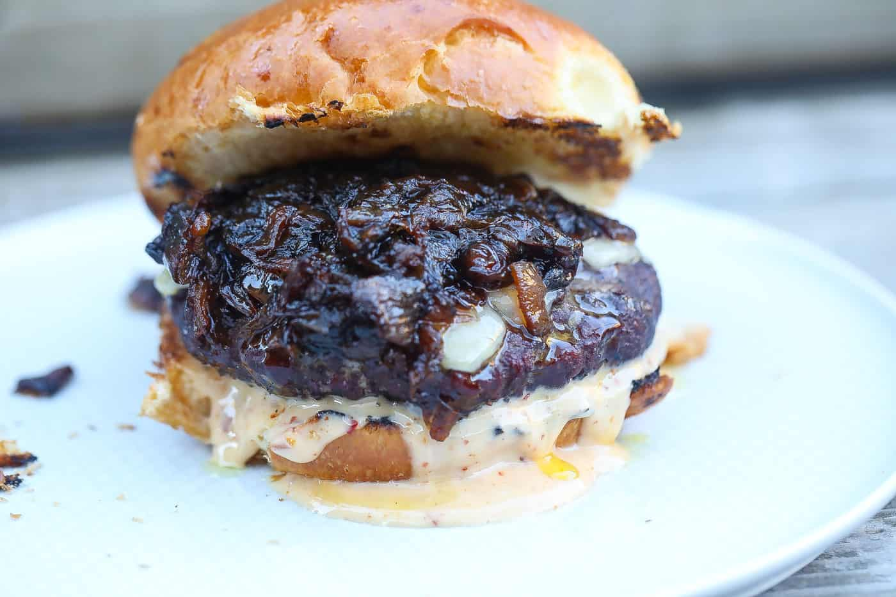

Smoked Burgers

Description
These are burgers, but smoked on a smoker. They get a pretty nice smoke line to them. They also bark up just a tiny bit, which is pretty dope. They also just taste better because who doesn't like smoked meat? Cowards, that's who. Cowards and vegans. And vegans are definitely afraid.
What You'll Need
- Smoker
- Preferrred pellets or wood chunks
- Spatula
- Mixing bowl
- Thermometer probe
Ingredients
- Buns
- Ground Beef
- Burger seasoning
- Cheese
- Worcestershire sauce
Steps
- Put ground beef into mixing bowl
- Shake on burger seasoning and worcestershire sauce. Need gently, but throughly into meat. Form burger patties.
- Prepare and heat smoker to 500 degrees. Preheat with lid closed for 15 minutes.
- Insert thermometer probe into a burger. Add burgers to the grill. Cook 6 minutes on one side, flip, and reduce heat to 195 degrees.
- Cook, with the lid closed, until internal temp is 160 degrees.
- During the last few minutes of cooking, add cheese to burgers. Toast buns on grill as well.
- Remove everything from the smoker and eat it all in one sitting, like a real American.